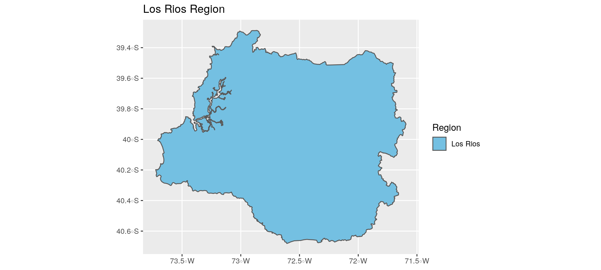
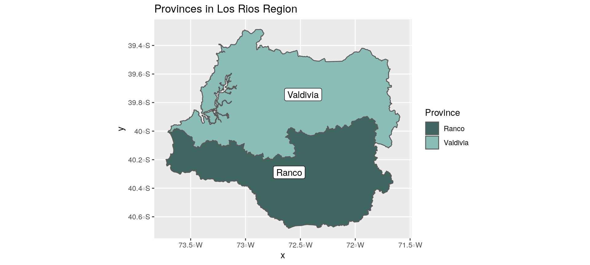
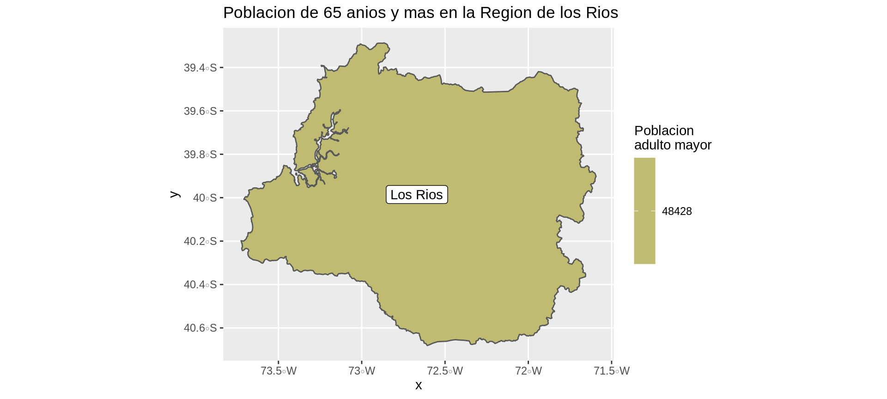
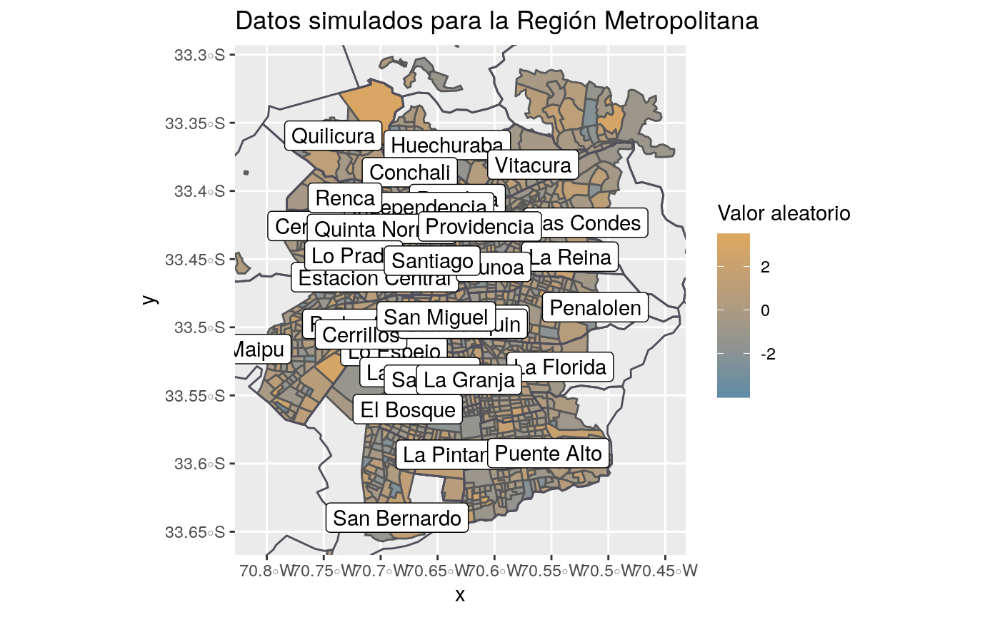

basic-usage.RmdVamos a mostrar la Region de los Rios y a agregar los nombres de las comunas junto con la informacion de poblacion adulto mayor.
library(chilemapas)
library(dplyr)
library(ggplot2)
poblacion_adulto_mayor_comunas <- censo_2017_comunas %>%
filter(as.integer(edad) >= 14) %>%
group_by(codigo_comuna) %>%
summarise(pob_adulto_mayor = sum(poblacion))
comunas_los_rios <- mapa_comunas %>%
filter(codigo_region == 14) %>%
left_join(
codigos_territoriales %>%
select(matches("comuna"))
) %>%
left_join(poblacion_adulto_mayor_comunas)
# estos colores vienen del paquete colRoz
# https://github.com/jacintak/colRoz
paleta <- c("#DCA761", "#CFB567", "#BFBC71", "#9EA887", "#819897")
ggplot(comunas_los_rios) +
geom_sf(aes(fill = pob_adulto_mayor)) +
geom_sf_label(aes(label = nombre_comuna)) +
scale_fill_gradientn(colours = rev(paleta), name = "Poblacion\nadulto mayor") +
labs(title = "Poblacion de 65 anios y mas en la Region de los Rios")
poblacion_adulto_mayor_provincias <- censo_2017_comunas %>%
filter(as.integer(edad) >= 14) %>%
left_join(codigos_territoriales) %>%
group_by(codigo_provincia) %>%
summarise(pob_adulto_mayor = sum(poblacion))
#> Joining, by = "codigo_comuna"
provincias_los_rios <- mapa_comunas %>%
filter(codigo_region == 14) %>%
mapa_provincias() %>%
left_join(
codigos_territoriales %>%
select(matches("provincia")) %>%
distinct()
) %>%
left_join(poblacion_adulto_mayor_provincias)
#> Joining, by = "codigo_provincia"Joining, by = "codigo_provincia"Joining, by
#> = "codigo_provincia"
ggplot(provincias_los_rios) +
geom_sf(aes(fill = pob_adulto_mayor)) +
geom_sf_label(aes(label = nombre_provincia)) +
scale_fill_gradientn(colours = rev(paleta), name = "Poblacion\nadulto mayor") +
labs(title = "Poblacion de 65 anios y mas en la Region de los Rios")
poblacion_adulto_mayor_regiones <- censo_2017_comunas %>%
filter(as.integer(edad) >= 14) %>%
left_join(codigos_territoriales) %>%
group_by(codigo_region) %>%
summarise(pob_adulto_mayor = sum(poblacion))
#> Joining, by = "codigo_comuna"
region_los_rios <- mapa_comunas %>%
filter(codigo_region == 14) %>%
mapa_regiones() %>%
left_join(
codigos_territoriales %>%
select(matches("region")) %>%
distinct()
) %>%
left_join(poblacion_adulto_mayor_regiones)
#> Joining, by = "codigo_region"Joining, by = "codigo_region"
ggplot(region_los_rios) +
geom_sf(aes(fill = pob_adulto_mayor)) +
geom_sf_label(aes(label = nombre_region)) +
scale_fill_gradientn(colours = rev(paleta), name = "Poblacion\nadulto mayor") +
labs(title = "Poblacion de 65 anios y mas en la Region de los Rios")
En el caso de contar con datos a nivel zonal (agregación de manzanas), se provee un dataset de todas las zonas urbanas contempladas en el CENSO.
comunas_santiago <- mapa_comunas %>%
filter(
codigo_provincia == 131 |
codigo_comuna %in% c(13401, 13201, 13301)
) %>%
left_join(codigos_territoriales)
#> Joining, by = c("codigo_comuna", "codigo_provincia", "codigo_region")
set.seed(200100)
zonas_metropolitana <- mapa_zonas %>%
filter(
codigo_provincia == 131 |
codigo_comuna %in% c(13401, 13201, 13301)
)
zonas_metropolitana <- zonas_metropolitana %>%
mutate(
valor_aleatorio = rnorm(nrow(zonas_metropolitana))
)
paleta <- c("#628ca5", "#dca761")
ggplot() +
geom_sf(data = zonas_metropolitana, aes(fill = valor_aleatorio)) +
geom_sf(data = comunas_santiago, colour = "#2A2B75", fill = NA) +
scale_fill_gradientn(colours = paleta, name = "Valor aleatorio") +
ylim(-33.65, -33.31) +
xlim(-70.81, -70.45) +
labs(title = "Datos simulados para la Región Metropolitana")